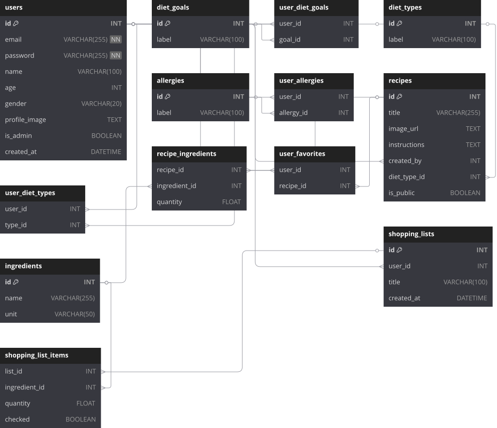
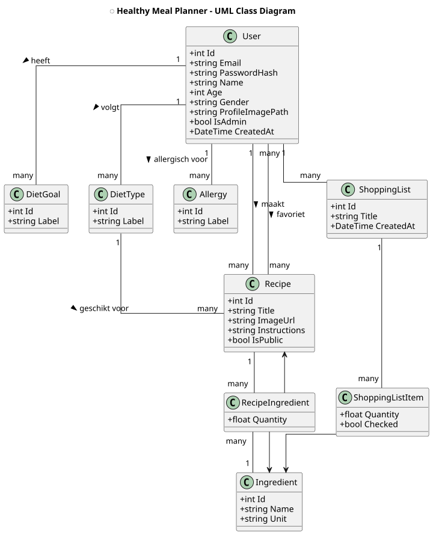
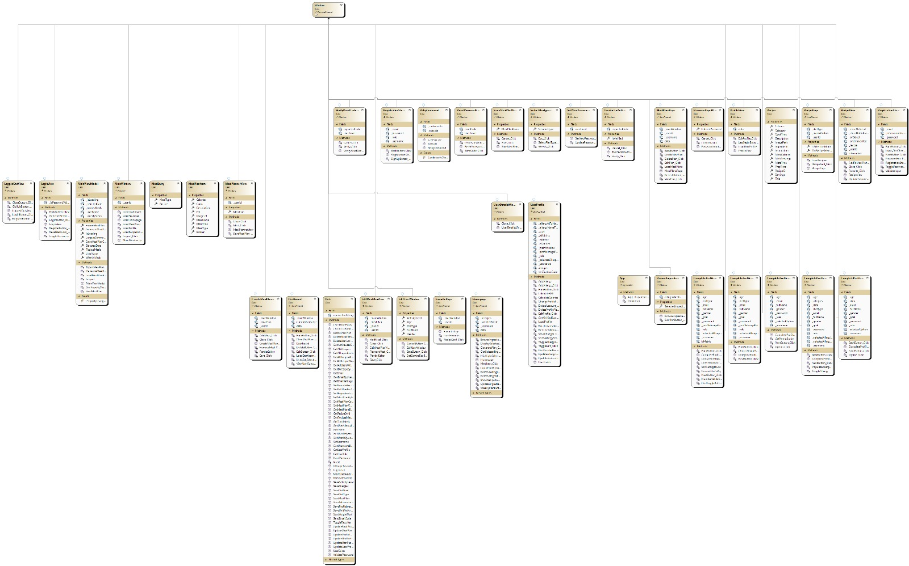

Gezond eten zonder verspilling
De Healthy Meal Planner is een slimme desktopapplicatie waarmee gebruikers:
Iedereen kan zich registreren met e-mail en wachtwoord.
Inloggen gaat veilig. Wachtwoord vergeten? Geen probleem!
Leeftijd, doel, profielfoto? Alles kan je makkelijk aanpassen.
Voeg ingrediënten toe en maak slimme maaltijden op basis van wat je hebt.
Admins hebben toegang tot het beheerdersgedeelte via veilige login.
Bekijk, wijzig of verwijder gebruikers vanuit één overzicht.
Statistieken over wie de app gebruikt en hoe.
Hieronder een Figma visualisatie van de flow & schermen:


